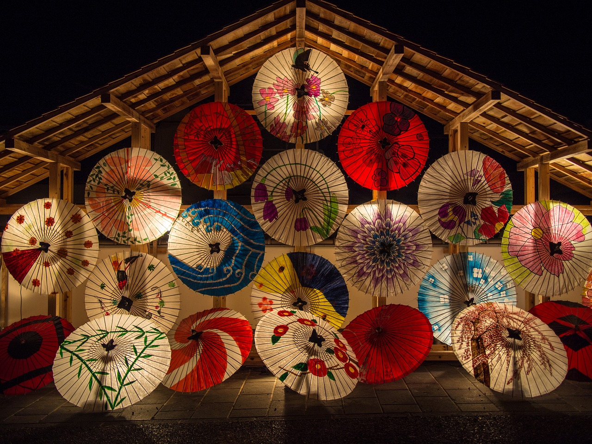

Le Japon est un pays où les traditions anciennes cohabitent avec une modernité de pointe. Que ce soit dans l'architecture, l'art de vivre ou la technologie, le Japon parvient à maintenir un équilibre entre son passé riche et son avenir innovant.
Des temples sacrés aux gratte-ciels futuristes, le Japon est un pays d'une diversité étonnante. Chaque région a sa propre identité culturelle, et vous pouvez passer d'un village traditionnel à une métropole animée en un rien de temps.

La vie quotidienne au Japon est régie par des coutumes et pratiques uniques. Le respect, la politesse et l'harmonie sont au cœur des interactions sociales, et les traditions comme la cérémonie du thé ou les bains onsen témoignent de l'importance du bien-être et du respect de la nature.
Le Japon change d’apparence au fil des saisons. Les cerisiers en fleurs au printemps, les festivals d’été, les feuilles rouges à l’automne, et les paysages enneigés en hiver rendent chaque période de l’année spéciale et incontournable.